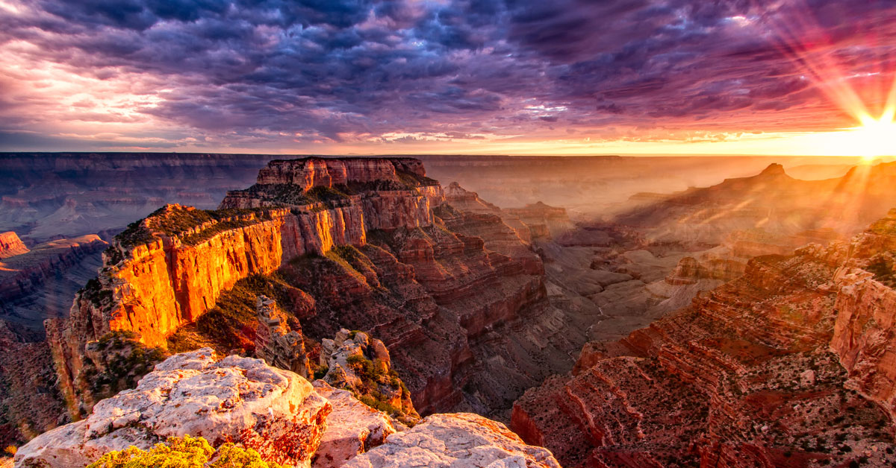

<!DOCTYPE html>

<html>
	<head>

		<title>
		El Glacial Perito Moreno
		</title>
		<meta http-equiv="Content-Type" content="text/html; charset=utf-8"/>
	</head>
</html>

<h1> El Glacial Perito Moreno </h1>
<p></p>

<body bgcolor= #b7edec>
<p align="center"><font size= "4" color= "black"><i>Santa Cruz,Argentina</i> </p>

<link rel="stylesheet" type="text/css" href="../css/estilos.css" media="screen">

<body>
<h2> Localización </h2>
<p>El glaciar Perito Moreno <b>es una gruesa masa de hielo ubicada en el departamento Lago Argentino de la provincia de Santa Cruz</b> , en el sudoeste de la Argentina, en la región de la Patagonia. Se integra dentro del parque nacional Los Glaciares.</p>
<p>Este glaciar se origina en el campo de hielo Patagónico Sur. En su descenso, alcanza el brazo Sur del lago Argentino, con un frente de 5 km de longitud, aflorando sobre el agua con una altura de unos 60 m.</p>
<p>Se encuentra ubicado frente a la península de Magallanes, al sur del parque nacional, a unos 80 km de la villa El Calafate, hasta donde se puede llegar en avión desde el Aeropuerto Internacional Comandante Armando Tola o por vía terrestre por la Ruta Provincial 11.</p>
<p><a href="https://goo.gl/maps/PPtMH3h92TY5Xamb6"></a></p>
<h2> Origen </h2>
<p>El glaciar Perito Moreno <u>empezó su formación hace más de 2.5 millones de años, en la última era del hielo</u>. Se cree que la forma del glaciar tal y como se puede ver actualmente es de unos 20.000 años, pese a que durante miles de años ha ido tomando esa forma rectangular tan característica.</p>
<p>Le debe su nombre a Francisco Pascasio Moreno, quien fuera director del museo de la Sociedad Científica Argentina. Este nombre le fue otorgado por el Teniente Iglesias en torno a 1899. Anteriormente, había sido conocido como glaciar Francisco Gormaz y glaciar Bismark.</p>
 <h2> Porque no se derrite </h2>
 <p>El glaciar Perito Moreno <u>es uno de los pocos que no se derrite</u>. Tampoco crece tres metros al día, como suelen contar los locales, sino que permanece en equilibrio pasando por ciclos de acumulación y ablación.</p>
 <p>La razón es que los glaciares no responden únicamente a los cambios de temperatura. Este gigante se mantiene gracias a las fuertes nevadas, los vientos, la altitud y su posición resguardada en la Patagonia argentina.</p>
</body>

<table border="5" class="center">
<tr>

<td>
		<p><a href = '../index.html'><figcaption style = 'text-align:center'>Inicio</figcaption ></a></p>
	</td>
	<td>
		<p><a href = '../html/lagranbarreradecoral.html'><figcaption style = 'text-align:center'>La Gran Barrera de Coral</figcaption></a></p>
	</td>

	<td>
		<p><a href = '../html/elgranagujeroazul.html'><figcaption style = 'text-align:center'>El Gran Agujero Azul</figcaption></a></p>
	</td>

</tr>
<tr>
	<td>
		<p><a href = '../html/elgrancañon.html'><figcaption style = 'text-align:center'>El Gran Cañon</figcaption></a></p>
	</td>
	
	<td>
		<p><a href = '../html/ellagoness.html'><figcaption style = 'text-align:center'>El Lago Ness</figcaption></a></p>
	</td>
	<td>
		<p><a href = '../html/cataratasdeliguazu.html'><figcaption style = 'text-align:center'>Cataratas del Iguazú</figcaption></a></p>


	</td>
</tr>

</table>